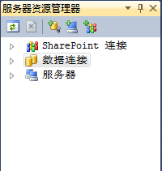
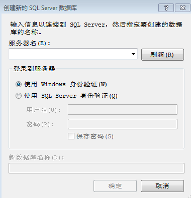
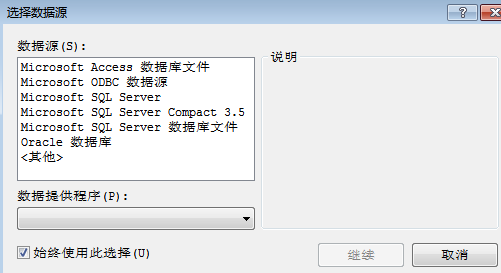
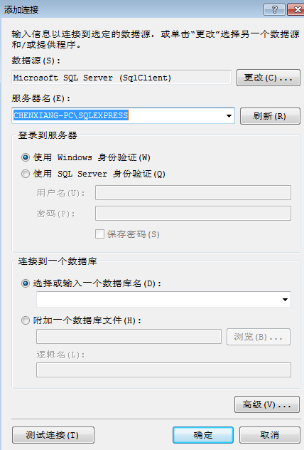
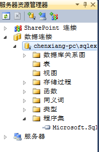

SQL Server是微软的数据库产品，也是一个较为众所周知的数据库产品，其中SQL Server 2000深受广大的用户的青睐，知名度较高，SQL Server 2008是其的后继产品之一，废话不多说了（本文不讨论VS或SQL Server的安装，假设预制环境就绪）。
首先在菜单的视图->其他窗口->服务器资源管理器，打开一个小的浮动窗口，就像这个样：

可以在数据连接项，右击，创建新SQL Server数据库，出现以下这个对话框：

点击一下刷新，在左边的输入控件的下拉菜单可以选择一个服务器，如果没有，说明本地的服务段（假设你的计算机处于脱机状态）未启动，通常像这种庞大的，高稳定的数据库都是一个服务端负责监听，并且在内部完成数据库的数据改动，相当于将数据库的逻辑模式和内部模式放到了服务器端（就像一个Apache服务器，在服务端工作一样）。
如果服务器没有启动，则要启动服务，这个跟mysql在Linux系统中用service mysqld start是一样的性质，在windows的开始菜单找到服务（Win7在管理员工具下面），或者在命令行输入services.msc，在服务工具的窗口中找到SQL Server （SQLEXPRESS），
SQL Server Browser和SQL Server VSS Writer，将这些服务启动，再回到上面的对话框，点击刷新，再单击下拉菜单应该就可看到服务器名了，说明服务器端已经启动，可以连接了。
在上面的服务器端选择后，输入新的数据库名，点击确定，就完成一个数据库的创建。
数据库创建后，就来连接刚才创建的数据。
依然在数据连接项上，右击，添加连接，会出现一个选择数据源的对话框：

这里选择Microsoft SQL Server，单击继续，之后出现一个添加连接的对话框：

服务器名就是刚才启动服务后添加的服务器名，点击下拉菜单可以看到，数据名项就输入刚才创建的那个数据库，也可以点击下拉菜单来选择自己的数据库，在未确定前也可以单击测试连接来验证一下，而后单击确定。
其实也可以在上面的添加连接，选择数据库名前不用创建一个新的数据库也可以，在添加连接对话框中的数据库名项，随便选个其他的数据库，登陆到数据库系统中，当登陆成功后，在查询栏中输入create database XXX;也可以创建数据库，其中XXX是数据库的名称，当要删除/摧毁这个数据库时，用drop database XXX;即可删掉XXX数据库。
在服务器资源管理器可以看到新建的数据库已经添加到数据连接的下面：

在数据资源管理器中的数据连接的下面，右击刚才的数据库，出现的菜单里有很多内容，选择新建查询，即可用SQL语言对数据库进行操作了。
要关闭数据库连接时，同样右击数据库名，单击关闭连接即可。